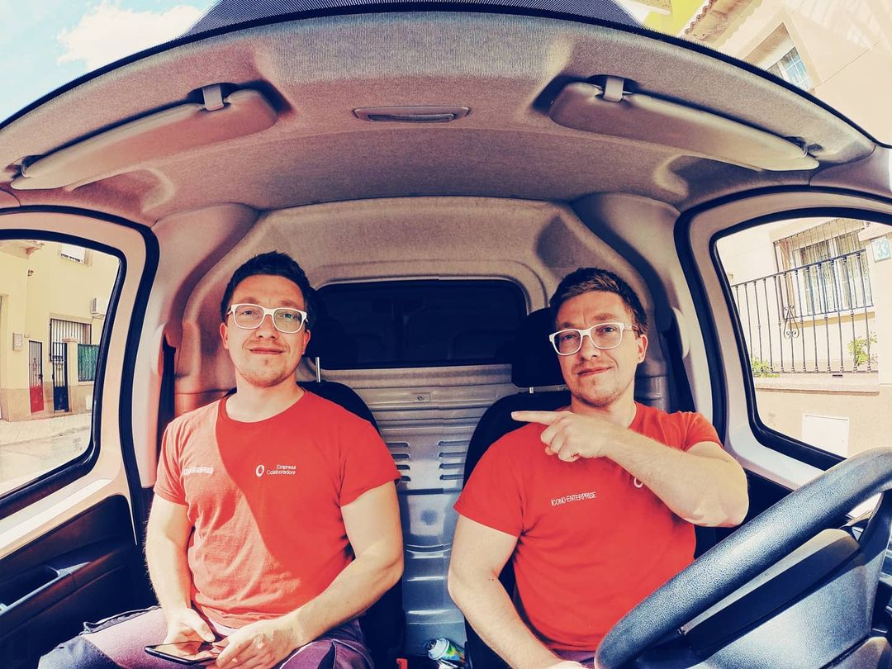

Me llamo Mihai Bogdan Mardale, tengo 33 años, soy de Rumanía y soy estudiante de Full Stack Developer en The Bridge. Me gusta el deporte, los viajes y la fotografía (en el Porfolio váis a poder ver algunos momentos capturados por mí). Estudié contabilidad en Rumanía, pero no me gustó, así que por el año 2009 he decidido venirme a vivir con mi familia en España. En el 2010 empecé un Ciclo Formativo de Grado Superior en Sistemas de Telecomunicaciones e Informáticas, el cual superé con éxito, pero debido a la crisis ha sido difícil encontrar trabajo en este área. Al principio trabajaba donde salía trabajo: en el campo, en una bodega, trabajos ajenos de reparación de ordenadores, montador de puertas automáticas... En el 2018 he empezado a trabajar como técnico de fibra óptica para Vodafone, hasta agosto del 2021. Ha sido una experiencia nueva, una experiencia que me ayudará de cara al futuro en los nuevos proyectos.

Mihai Bogdan
Después de 3 años trabajando para Vodafone, he decidido que era hora de hacer un cambio y asumir un nuevo reto, algo que sea captivante para el cerebro. Asi que he decidido estudiar Full Stack Developer. Todavía recuerdo los pequeñas programitas que hacíamos en el ciclo formativo, con extension .bat, y que me encantaban (no tanto el programa en sí, sino el problema que había que solucionar). Es un área donde no se para de aprender... Así que vamos a por ello.
to be continued...